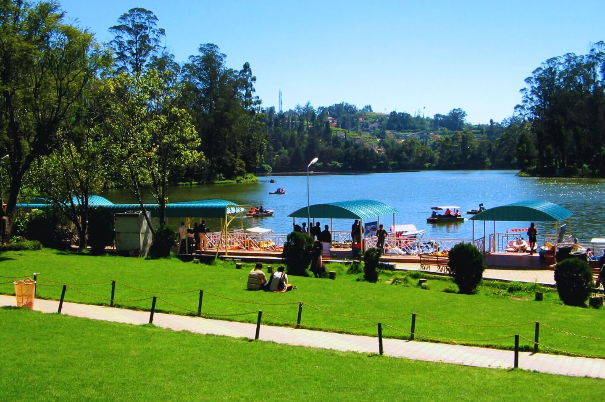

Ooty The Queen of Hill Stations

History
Ooty was discovered by the British in the early 19th century and served as the summer capital of the Madras Presidency.
Languages
Tamil, English, Badaga, Kannada
Famous Food
Hot Homemade Chocolate, Tea, Varkey, Nilgiri Bakery Specialties
About Ooty
Ooty, officially known as Udhagamandalam, is a picturesque hill station nestled in the Nilgiri Hills of Tamil Nadu at an altitude of 2,240 meters above sea level. It's renowned for its stunning landscapes, tea plantations, and pleasant year-round climate.
The hill station is characterized by rolling hills covered with eucalyptus trees, coffee and tea plantations, and colonial-era architecture. The Nilgiri Mountain Railway, a UNESCO World Heritage site, offers one of the most scenic train journeys in India.
Why Visit Ooty?
Hill Station
Experience the breathtaking beauty of the Nilgiri Hills
Cool Climate
Enjoy pleasant weather throughout the year
Tourist Attraction
Perfect destination for nature lovers and photographers
Toy Train
Ride the UNESCO World Heritage Nilgiri Mountain Railway
- Spectacular hill station at 2,240 meters elevation
- Pleasant cool climate ideal for year-round visits
- Major tourist attraction with diverse activities
- UNESCO World Heritage mountain railway experience
Important Places

Ooty Lake
Artificial lake built in 1824, perfect for boating and picnics
Botanical Garden
65-acre garden with exotic plants, fossil tree and flower shows

Doddabetta Peak
Highest point in the Nilgiris at 2,637 meters with panoramic views

Nilgiri Mountain Railway
UNESCO World Heritage toy train journey through scenic hills

Pine Forest
Picturesque pine plantation popular for photography

Tea Museum
Learn about tea processing and sample fresh Nilgiri tea
Visitor Information
Best Time to Visit
April to June and September to December for pleasant weather
How to Reach
Airport: Coimbatore (90 km)
Railway: Mettupalayam & Ooty
Stay Options
Colonial bungalows to luxury resorts
Tourist Helpline
+91 423 123 4567
Current Weather
Explore Ooty on Map
📍 Click markers – each place name has a unique bright color. Use the search bar above to find any place.